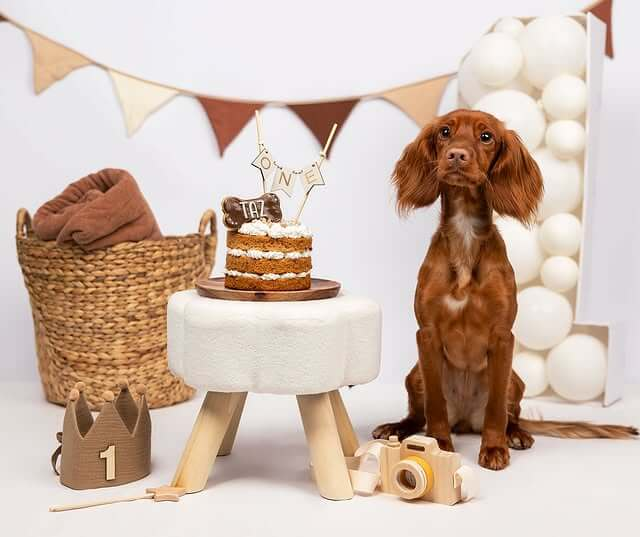
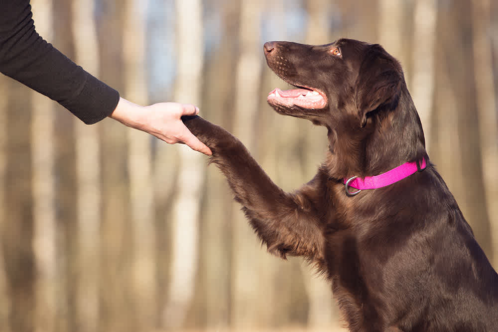
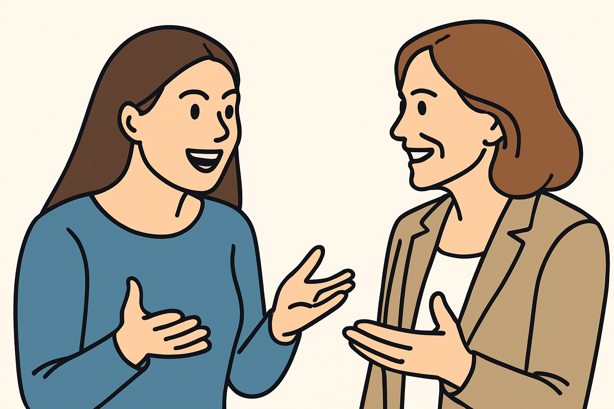

Metodo di lavoro: educatrice cinofila a rapporto

Ogni cane è unico.
Ogni famiglia ha il suo stile di vita.
Ecco perché il mio metodo non si basa su un pacchetto standard, ma su un percorso di educazione cinofila personalizzato creato per voi.
L'obiettivo è semplice: aiutarti a costruire una relazione stabile e gestibile con il tuo cane in ogni contesto – a casa, in città, in libertà – con un approccio positivo e senza stress.

Step 1 - Valutazione iniziale: capire il vostro punto di partenza
Il primo passo è sempre l'ascolto.
Nel nostro incontro iniziale analizzo
- Il comportamento attuale del tuo cane
- Il contesto in cui vivete (abitazione, routine, ambiente e stimoli)
- le esperienze passate e gli obiettivi che desideri raggiungere
- I tuoi obiettivi e le tue difficoltà
Questo momento è fondamentale per costruire un percorso realmente efficace, che rispetti i tempi, le esigenze e le priorità della tua famiglia.

Step 2. Lezioni pratiche su misura
Ogni lezione è diversa e progettata con obiettivi chiari e realistici. Non seguo schemi fissi, ma mi adatto ai contesti reali in cui vivi:
Lavoriamo nei contesti reali in cui vivi:
- In casa: gestione degli spazi, soglie, relax, abitudini quotidiane e interazioni con gli ospiti.
- In città: guinzaglio, interazioni con altri cani, rumori, distrazioni urbane
- In libertà: richiamo, autocontrollo, sicurezza, ambienti pubblici come parchi, bar o mezzi di trasporto
Non troverai teoria astratta: ogni esercizio ha uno scopo pratico. Ed alla fine di ogni incontro riceverai una scheda riepilogativa, per sapere sempre cosa fare e perché.
Step 3 - Supporto reale tra una lezione e l’altra
È tra un incontro e l'altro che si avviene la vera trasformazione. Per questo riceverai un accompagnamento costante:
- Vocali settimanali personalizzati su WhatsApp per rispondere ai tuoi dubbi e aiutarti ad adattare gli esercizi
- Feedback sui tuoi video: puoi registrare le sessioni e ti invierò correzioni e suggerimenti dettagliati.
- Check dei progressi ogni settimana → ci aggiorniamo sull'andamento del percorso e aggiustiamo il tiro insieme
Non sarai mai solo: sarò al tuo fianco per guardarti, ascoltarti e guidarti passo dopo passo.

Cosa puoi aspettarti da questo percorso di addestramento cinofilo
Questo percorso non promette miracoli in 3 giorni, ma garantisce un cambiamento reale, profondo e duraturo. Potrai avere:
- ⭐ Un cane più centrato, calmo e collaborativo
- ⭐ Una gestione chiara e serenain casa e fuori
- ⭐ Passeggiate rilassate, senza tensioni
- ⭐ Maggiore ascolto reciproco e comunicazione efficace
- ⭐ Un rapporto che migliora visibilmente settimana dopo settimana
La cosa più importante è che inizierai a sentirti capace e sicuro: diventerai la guida serena di cui il tuo cane ha bisogno
Vuoi cominciare?
Prenota la tua consulenza gratuita. Parliamo della vostra situazione, delle abitudini, delle difficoltà.
Senza impegno, ma con attenzione vera.
Come Posso Aiutarti ?